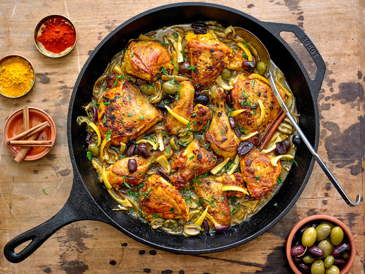

Moroccan Chicken Thighs

Description
Quick and easy thighs with complex Moroccan flavors. Serve with rice, garnished with lemon wedges.
Ingredients
- 8 bone-in chicken thighs
- kosher salt and ground black pepper to taste
- 1 ½ cups chicken broth
- 3 tablespoons paprika
- 3 tablespoons ground cumin
- 3 teaspoons minced fresh ginger root
- 3 teaspoons ground turmeric
- 2 teaspoons ground cinnamon
- 1 lemon, zested and juiced
- olive oil, or to taste
- 1 tablespoon canola oil, or to taste
- ½ white onion, chopped
- 1 cup pimento-stuffed green olives
- 2 tablespoons chopped fresh parsley
Steps
- Season chicken thighs with salt and pepper. Let come to room temperature, about 30 minutes.
- Preheat the oven to 375 degrees F (190 degrees C).
- Combine chicken broth, paprika, cumin, ginger, turmeric, cinnamon, and 2 teaspoons lemon zest in a bowl.
- Heat oils in a cast iron skillet until they begin to smoke. Add chicken thighs, skin-side down, and cook for 4 minutes. Flip thighs and continue cooking until skin is crispy, about 4 minutes more. Transfer to a plate. Saute onion in the skillet until softened, 3 to 5 minutes. Pour chicken broth mixture carefully over onion; scrape up any browned bits off the bottom of the skillet.
- Return chicken thighs to the skillet. Spoon some of the liquid over the thighs.
- Transfer skillet to the preheated oven; bake until chicken thighs are no longer pink in the center, 25 to 30 minutes.
- Add olives to the skillet. Drizzle lemon juice over the thighs and garnish the whole dish with parsley.